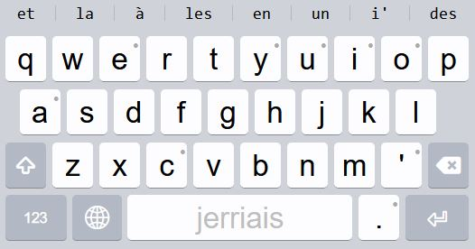
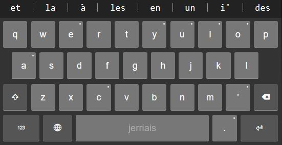

First, download the Jèrriais keyboard package and the Jèrriais autocomplete package onto your phone.
Then install the Keyman app.
Follow the instuctions to enable Keyman as a system-wide keyboard, and if you are using an iPhone, also check "Allow Full Access". Unfortunately there's currently a bug where the keyboard sometimes appears blank if you don't do this.
If you previously installed jerriais_tech.nrf-je.spellcheck.model.kmp, delete that now by tapping
Settings, Installed Languages, Jèrriais, Dictionaries, and swiping left on Jèrriais Wordlist Lexical Model.
Next tap the three dots menu at the top right and tap Settings, then Install From File. Choose
jt.nrf-je.spellcheck.model.kmp first and follow the install process. Then Install From File again and
choose jerriais.kmp.
The keyboard is now installed. You can go to Settings again, then Installed Languages. An English keyboard is probably installed, but you already have one of those on your phone, so tap it, then EuroLatin (SIL) and Uninstall Keyboard.
Just to double check everything is set up correctly, you can go back to Installed Languages, tap Jèrriais, Dictionaries, and Jèrriais Wordlist Lexical Model. This selects the Jèrriais keyboard and autocorrect pacakge.
You're ready to go! Tap the globe to switch back and forth between the Jèrriais keyboard and your phone's normal keyboard.
The smartphone keyboard layout is similar to English. You'll notice that the vowels and some other letters have dots in the top right corner; this means you can hold down this key to find other options. For example, holding down a vowel gives accent options, and holding down a punctuation key gives further punctuation. Keep holding your finger down, slide to the desired option and release.
You can also use flicking gestures for commonly used accents.
Other punctuation can be found by pressing the 123 key.
 Jèrriais keyboard on iPhone
 Jèrriais keyboard on Android
Install the Keyman app and download the Jèrriais
keyboard package.
Start Keyman and open the Keyman Configuration. Click Install keyboard... at the bottom left and select the
jerriais.kmp file.
With everything installed and the Jèrriais keyboard selected you should be able to use the shortcuts below.
On a desktop computer you use your keyboard normally, until you want to use an accent:
e'' = éa`` = ào^^ = ôi"" = ïc,, = ç